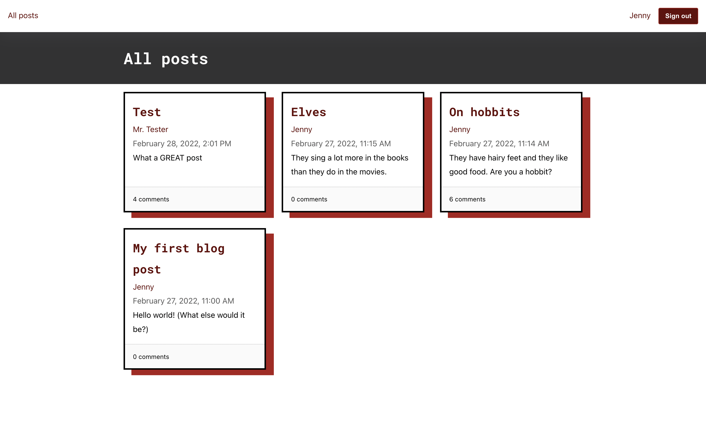
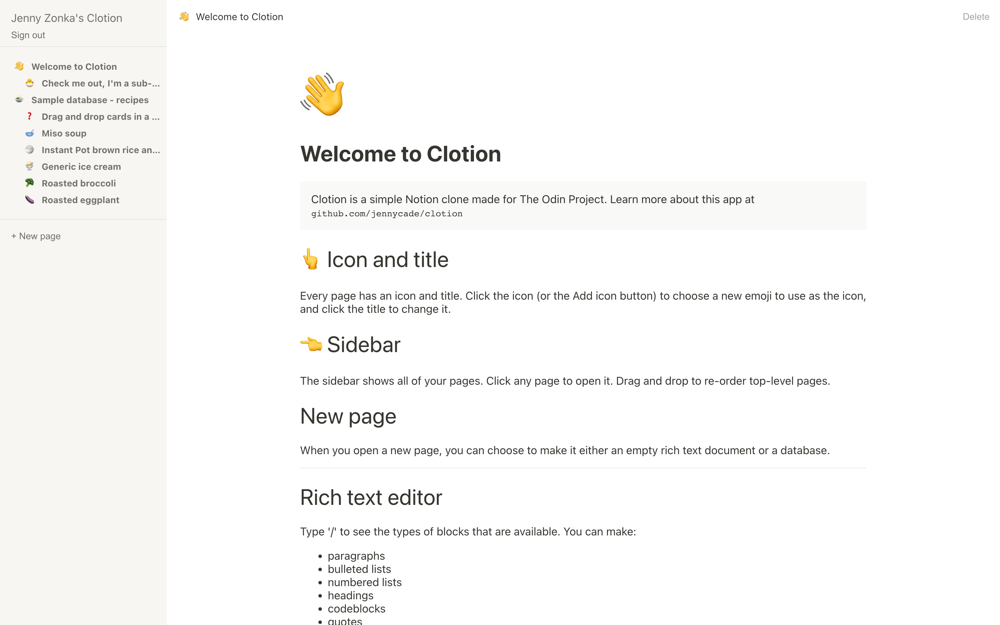
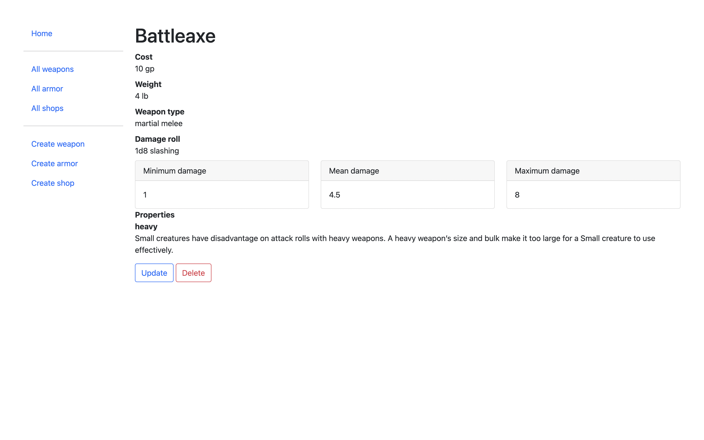

Jenny Zonka, Full Stack Developer
Placeholder for my summary
Projects
-
Blog API
Blog site with a REST API, public front end, and admin site. This is a project for The Odin Project.
- Currently building
- Built with
- MongoDB, Node, Express, React
- Repos
- API
- Public frontend
- Admin frontend
-
Clotion
Simple clone of Notion with rich text editing and databases. This was the final project for the Javascript course in The Odin Project.
-
Ye Olde Adventuring Shoppe
Editable database of weapons, armor, and shops for Dungeons & Dragons 5e. This was a project for The Odin Project.
About
Bio
I love to learn, and I love to make things. I have been a teacher, a scientist, and a farmer. The throughline in all my careers is building things with code. As a scientist I used R, python, and ImageJ to build a pipeline for analyzing microscopy data.
Experience
Languages & Tools
Fluent
- React
- Express.js
- Javascript
- Semantic HTML5
- CSS
- MongoDB
- Firebase
Familiar and previously used
- Python
- R
- PHP
- MySQL
- Java
Interests and Hobbies
- Cooking
- DM for a weekly D&D game
- Volunteer tutoring
- Baking bread
- Reading (mostly nonfiction)
- Knitting
- Gardening
- Hiking
- Biking
- British panel shows